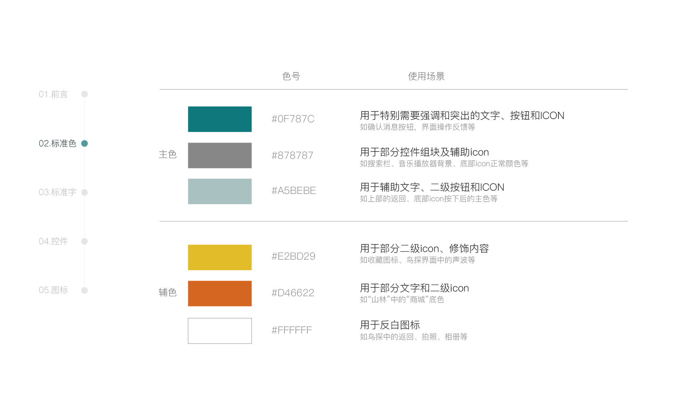
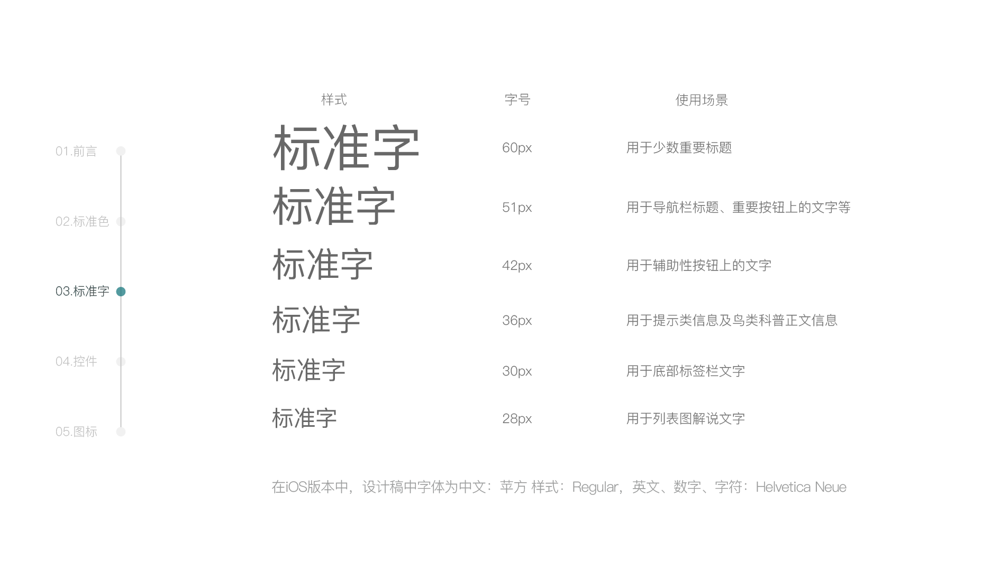

设计愿景
目标用户
用户模型
特色功能
我们将基于Google TensorFlow 框架，构建一个机器学习应用, 可以通过图像和音频两种信息输入识别鸟的种类。鸟类的叫声和图像数据集我们将与鸟类爱好者, 环境保护组织和领域专家合作收集完成, 并租用英伟达的 GPU 云, 在服务器上进行训练。 待模型训练成熟, 系统将具有如下功能:
1. 识别特定的鸟类叫声：AI 系统使用已记录和存储的音频, 将其切割成不同长度的片段并转换为光谱图。在将谱图切成块之后，每个块的时间长度将小于1秒钟. 这些图像块将通过深度卷积神经网络单独处理, 完成对多种鸟的分类.
2. 识别特定的鸟类图像：AI 系统将使用深度卷积神经网络, 从输入图像中分块提取鸟的各部位的特征, 如鸟的喙部形状, 羽毛颜色, 体型大小, 腿部颜色等, 与预先建立的鸟类特征数据库比较, 分析推断出置信度最高的种类.
界面＆交互方式

UI设计规范


视频展示